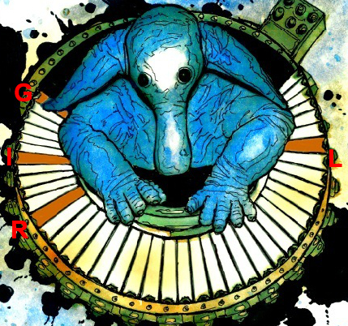

Author: Kevin G. Der
Art: Eddie Mize
The puzzle's title and the image of a nalargon (Max Rebo's keyboard instrument) point to Star Wars. A row of video clips (with no audio) and a row of audio clips are given. The video clips are clearly from the Star Wars original trilogy movies (the clips are given in film chronological order). Each audio clip contains music and sound effects from one of the original video clips (before the audio was removed) - therefore, the video / audio clips must be correctly paired. Each audio clip's visual animation is a visual cue called a "streamer and punch," used for synchronization when recording an orchestra performing a film score. The punch occurs exactly when a certain word of dialogue is spoken. The correctly matched video / audio clips and dialogue words are the following:
| Video Clip | Audio Clip | Dialogue Word | Episode # | Dialogue Word Timestamp (2005 DVD release, varies across editions) | Dialogue Sentence |
| 1 | H | SO | 4 | 0:07:41 950 | "Darth Vader, only you could be so bold" |
| 2 | F | NOW | 4 | 0:42:19 520 | "There's nothing for me here now" |
| 3 | A | GIRL | 4 | 1:18:54 200 | "Wonderful girl" |
| 4 | G | HIT | 4 | 1:33:06 520 | "Ok, hit it" |
| 5 | B | ICE | 5 | 0:03:44 650 | "There isn't enough life on this ice cube to fill a space cruiser" |
| 6 | D | EMPIRE | 5 | 0:25:43 125 | "Right now I feel like I could take on the whole empire myself" |
| 7 | I | IF | 5 | 0:39:34 810 | "We're going to get pulverized if we stay out here much longer" |
| 8 | E | MATTERS | 5 | 1:25:20 500 | "Now matters are worse" |
| 9 | C | VADER | 6 | 0:42:00 610 | "Is Darth Vader my father?" |
| 10 | K | HAN | 6 | 0:51:29 700 | "Hi Han, Chewie" |
| 11 | J | LEIA | 6 | 1:20:28 930 | "Yes, it's you, Leia" |
The colored keyboard keys for each clip correspond to the letters of that dialogue word, which can be used to assist identification. Each key is colored exactly once. The following example shows the letters of the first clip's dialogue word (GIRL) mapped onto the corresponding keyboard keys:
After assigning the corresponding letters of each word to their keys in sequential order, the letters spell out the clue phrase GIVE MAIN CHARS TITLE FROM EPISODE II WHAT LEARNER. Anakin Skywalker holds the title of padawan learner in Episode II, so the answer is PADAWAN.